A comprehensive benchmark combining 2D images and 3D point clouds with fine-grained domain semantics to evaluate 18 state-of-the-art MLLMs on real-world manufacturing quality inspection tasks.
1University of Waterloo, Canada
2University of Sydney, Australia
3SMU, Singapore
4CUHK, Shenzhen, China
5Hunan University, China
6NTU, Singapore
7RMIT University, Australia
8City University of Hong Kong, China
9HKUST (Guangzhou), China
*Equal contribution †Corresponding author
Existing VLM benchmarks test coarse-grained perception ("What is this?"). FORGE demands fine-grained, model-number-level understanding for real manufacturing quality control.
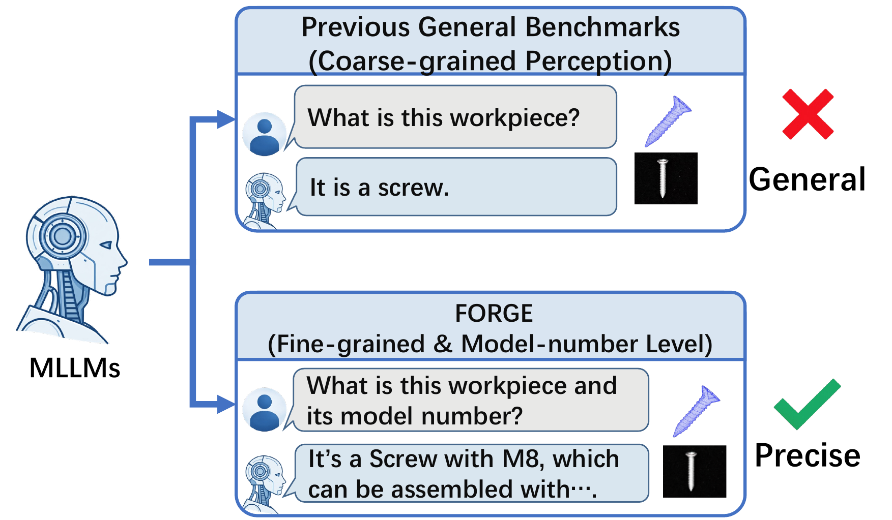
Previous benchmarks ask "Is this a screw?" FORGE asks "Is this an M8 screw, and does it match the M10 specification required for this assembly?"
We provide the first comprehensive evaluation combining 2D images and 3D point clouds with domain-specific manufacturing knowledge, covering 14 workpiece categories and 90 distinct model specifications.
Our evaluation of 18 frontier and open-source MLLMs reveals that visual grounding is not the bottleneck — instead, insufficient domain-specific knowledge is the primary limitation.
From physical workpieces to standardized evaluation: FORGE bridges the gap between industrial reality and MLLM reasoning.
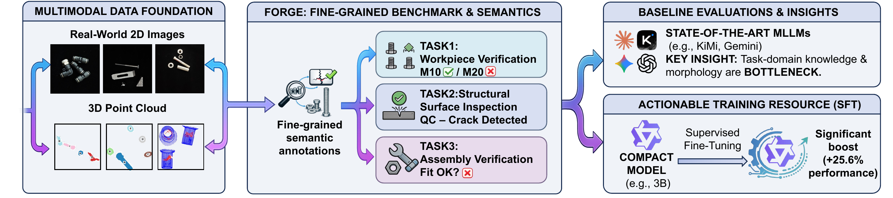
Figure 1. The FORGE pipeline: (1) Raw manufacturing data from the physical world, (2) Standardization with fine-grained domain knowledge injection, (3) Task-oriented scenarios with both 3D point clouds and 2D rendered views, (4) MLLM cognition evaluation revealing macro-perception vs. micro-reasoning gaps.
Three core quality inspection tasks spanning workpiece verification, surface defect inspection, and assembly verification.
Workpiece Verification — Given an assembly, identify which part has the wrong model number. Requires fine-grained discrimination between similar-looking parts (e.g., M8 vs M10 bolts).
451 image + 496 three-view cases
Surface Inspection — Classify manufacturing defects: crack, cut, deformation, or dent. Two-part answer: first determine if normal, then identify defect type.
830 three-view cases, 4 defect types
Assembly Verification — Identify extra, mismatched, or missing parts in an assembly. Tests compositional understanding of multi-component systems.
857 image + 309 three-view + 377 missing-part cases
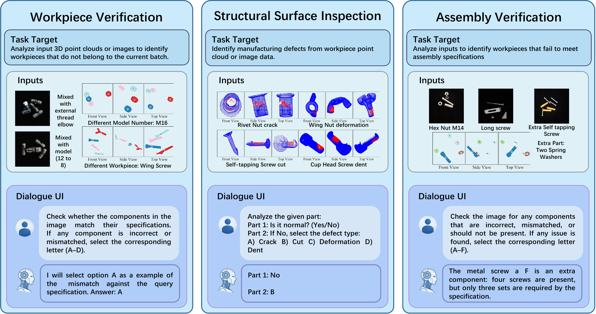
Figure 2. Examples for each task showing inputs (2D images / 3D three-view renders), dialogue format, and expected outputs.
Comprehensive evaluation of 18 MLLMs across all tasks with zero-shot (Z), reference (R), and in-context learning (F) settings.
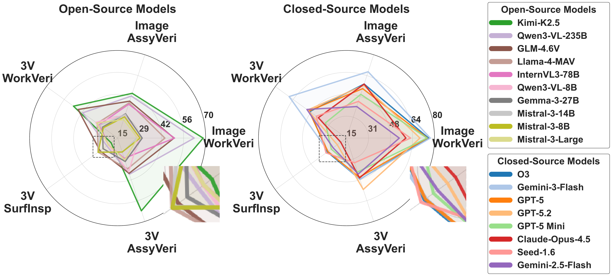
Figure 3. Radar chart comparing open-source and closed-source model performance across all tasks and modalities.
| Model | Image | Three-View | ||||
|---|---|---|---|---|---|---|
| Z | R | F | Z | R | F | |
| Closed-Source Models | ||||||
| GPT-5 | 74.7 | 64.2 | 85.2 | 60.7 | 29.8 | 56.5 |
| GPT-5.2 | 70.9 | 51.9 | 79.2 | 61.3 | 28.2 | 61.7 |
| GPT-5 Mini | 73.6 | 72.7 | 76.8 | 37.9 | 33.9 | 30.6 |
| O3 | 75.2 | 64.1 | 76.3 | 57.9 | 28.8 | 56.9 |
| Gemini-3-Flash | 72.2 | 76.3 | 82.3 | 69.6 | 65.1 | 67.3 |
| Gemini-2.5-Flash | 55.8 | 51.7 | 54.5 | 56.0 | 43.5 | 53.6 |
| Claude-Opus-4.5 | 59.4 | 56.1 | 61.0 | 39.1 | 27.8 | 55.0 |
| Seed-1.6 | 67.0 | 49.7 | 70.3 | 54.4 | 26.8 | 46.2 |
| Kimi-K2.5 | 60.1 | 56.7 | 62.7 | 19.4 | 10.1 | 44.0 |
| Open-Source Models | ||||||
| Qwen3-VL-235B | 64.1 | 57.6 | 66.3 | 51.4 | 32.9 | 34.3 |
| Qwen3-VL-8B | 35.3 | 23.9 | 25.1 | 41.3 | 26.8 | 26.2 |
| InternVL3-78B | 32.6 | 53.9 | 65.3 | 32.3 | 24.8 | 30.0 |
| Llama-4-MAV | 37.3 | 39.0 | 48.8 | 36.3 | 20.4 | 35.7 |
| GLM-4.6V | 25.3 | 50.3 | 49.8 | 46.4 | 43.8 | 44.4 |
| Gemma-3-27B | 25.9 | 30.4 | 34.6 | 27.6 | 23.6 | 28.8 |
| Mistral-3-Large | 25.7 | 25.4 | 31.0 | 33.9 | 20.8 | 37.3 |
| Mistral-3-14B | 32.5 | 20.2 | 24.2 | 32.5 | 25.0 | 28.4 |
| Mistral-3-8B | 29.9 | 24.2 | 32.0 | 30.8 | 18.1 | 28.6 |
| Model | Zero-Shot | Reference | Few-Shot |
|---|---|---|---|
| Closed-Source Models | |||
| Gemini-3-Flash | 18.5 | 29.6 | 47.1 |
| Claude-Opus-4.5 | 8.7 | 7.7 | 44.3 |
| Seed-1.6 | 22.6 | 36.2 | 42.3 |
| O3 | 21.1 | 36.2 | 40.0 |
| Llama-4-MAV | 27.0 | 24.1 | 39.1 |
| GPT-5 | 22.0 | 35.7 | 38.3 |
| Gemini-2.5-Flash | 17.2 | 26.4 | 38.1 |
| GPT-5 Mini | 17.0 | 33.4 | 36.2 |
| GPT-5.2 | 16.6 | 21.9 | 31.7 |
| Kimi-K2.5 | 13.2 | 16.8 | 30.1 |
| Open-Source Models | |||
| Mistral-3-8B | 24.3 | 27.1 | 38.9 |
| Gemma-3-27B | 21.7 | 23.9 | 33.2 |
| Mistral-3-14B | 28.3 | 27.7 | 33.2 |
| Qwen3-VL-235B | 19.2 | 18.7 | 32.2 |
| GLM-4.6V | 23.5 | 23.8 | 38.4 |
| Mistral-3-Large | 19.8 | 19.8 | 26.7 |
| InternVL3-78B | 19.2 | 21.6 | 25.7 |
| Qwen3-VL-8B | 19.4 | 21.3 | 25.8 |
| Model | Image | Three-View | ||||
|---|---|---|---|---|---|---|
| Z | R | F | Z | R | F | |
| Closed-Source Models | ||||||
| Gemini-3-Flash | 58.1 | 70.4 | 71.4 | 47.2 | 46.3 | 47.6 |
| GPT-5.2 | 43.2 | 53.5 | 63.2 | 54.0 | 57.0 | 53.7 |
| Claude-Opus-4.5 | 52.1 | 56.4 | 62.9 | 42.1 | 50.8 | 45.3 |
| O3 | 48.2 | 59.8 | 61.0 | 49.8 | 34.0 | 51.8 |
| GPT-5 | 50.1 | 49.8 | 60.5 | 53.7 | 30.7 | 51.8 |
| GPT-5 Mini | 43.6 | 51.1 | 52.2 | 49.5 | 29.4 | 45.3 |
| Seed-1.6 | 39.7 | 42.5 | 47.9 | 41.4 | 26.5 | 34.3 |
| Gemini-2.5-Flash | 39.6 | 32.2 | 46.7 | 45.0 | 40.1 | 44.0 |
| Kimi-K2.5 | 18.8 | 11.7 | 25.8 | 11.7 | 6.5 | 22.0 |
| Open-Source Models | ||||||
| Qwen3-VL-235B | 36.9 | 40.2 | 50.2 | 41.1 | 28.8 | 39.5 |
| GLM-4.6V | 27.9 | 37.2 | 45.3 | 38.8 | 36.6 | 37.9 |
| InternVL3-78B | 33.1 | 36.1 | 42.4 | 34.3 | 22.0 | 28.8 |
| Llama-4-MAV | 32.1 | 25.8 | 36.3 | 38.2 | 30.1 | 37.5 |
| Qwen3-VL-8B | 31.9 | 28.4 | 30.3 | 39.2 | 33.0 | 38.8 |
| Gemma-3-27B | 28.3 | 31.7 | 32.9 | 27.2 | 32.0 | 32.0 |
| Mistral-3-8B | 29.6 | 26.8 | 30.3 | 24.6 | 18.4 | 29.4 |
| Mistral-3-14B | 29.7 | 32.0 | 28.8 | 28.2 | 19.1 | 25.9 |
| Mistral-3-Large | 29.1 | 23.7 | 28.5 | 26.2 | 26.9 | 25.9 |
Testing spatial grounding ability independently from domain knowledge. High grounding accuracy confirms visual perception is NOT the bottleneck.
| Model | Single-Image | Cross-Image | Avg | ||
|---|---|---|---|---|---|
| C→L | L→C | L→L | C→C | ||
| Gemini-3-Flash | 98.2 | 99.6 | 88.7 | 79.9 | 91.6 |
| Qwen3-VL-235B | 85.4 | 98.8 | 80.3 | 65.7 | 82.6 |
| GPT-5.2 | 74.6 | 97.6 | 85.6 | 75.4 | 83.3 |
| Seed-1.6 | 42.0 | 99.2 | 79.3 | 71.2 | 72.9 |
| Mistral-3-8B | 66.0 | 70.6 | 62.0 | 33.9 | 58.1 |
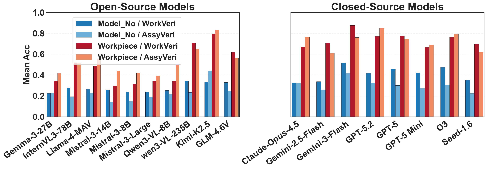
Figure 4. Model-number-level tasks (darker bars) are significantly harder than coarse workpiece-level tasks (lighter bars), revealing the domain knowledge gap.
Sample images from each task showing the diversity of industrial components, defect types, and evaluation modalities.
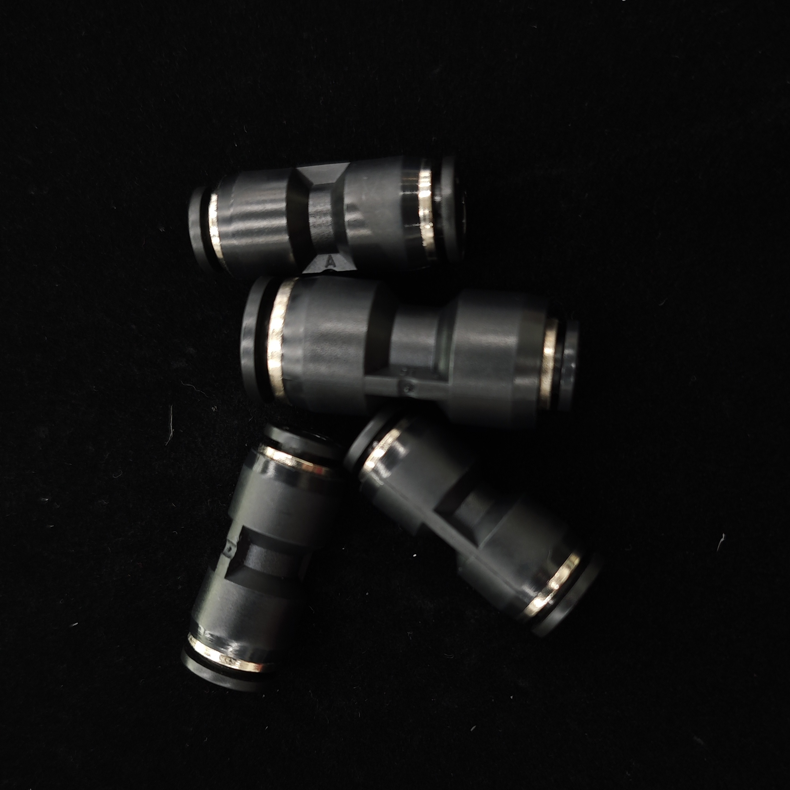
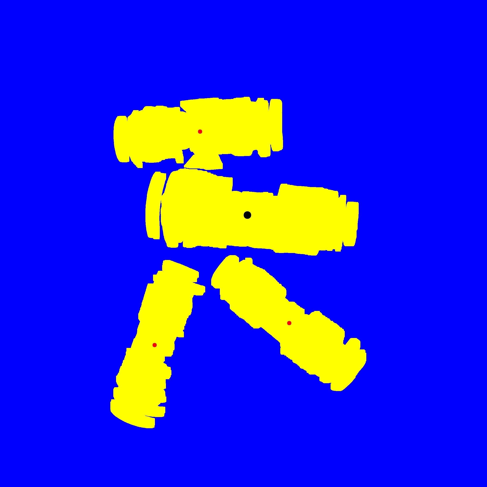
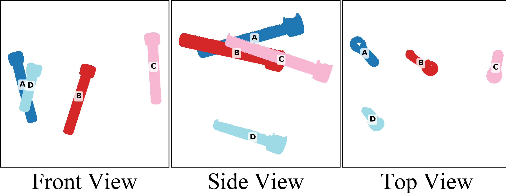
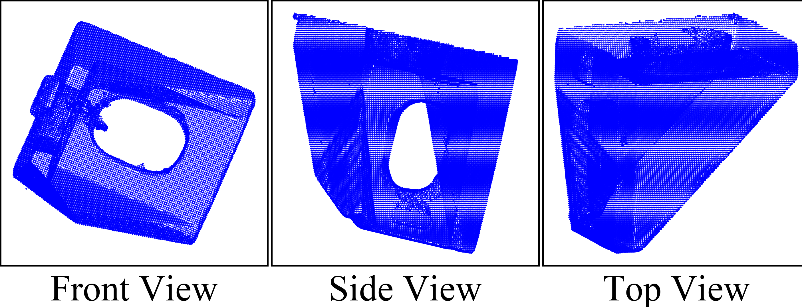
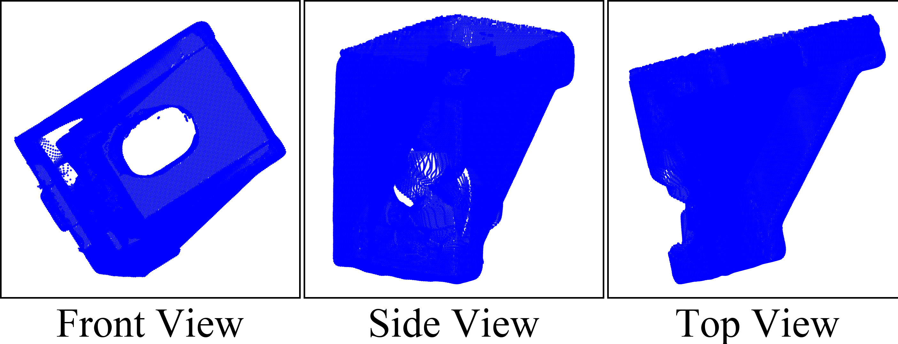
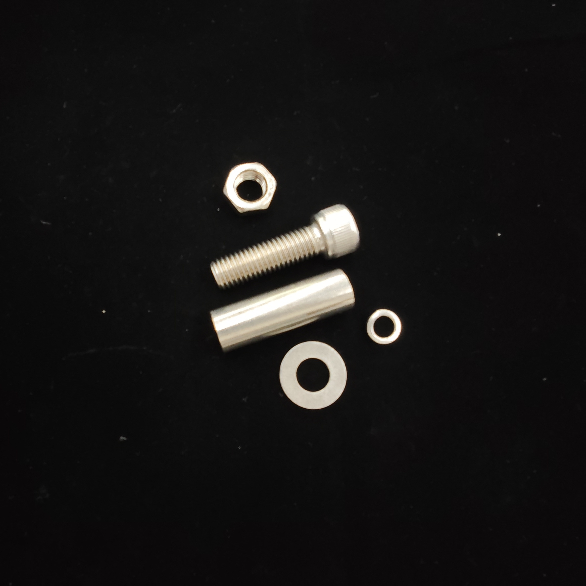
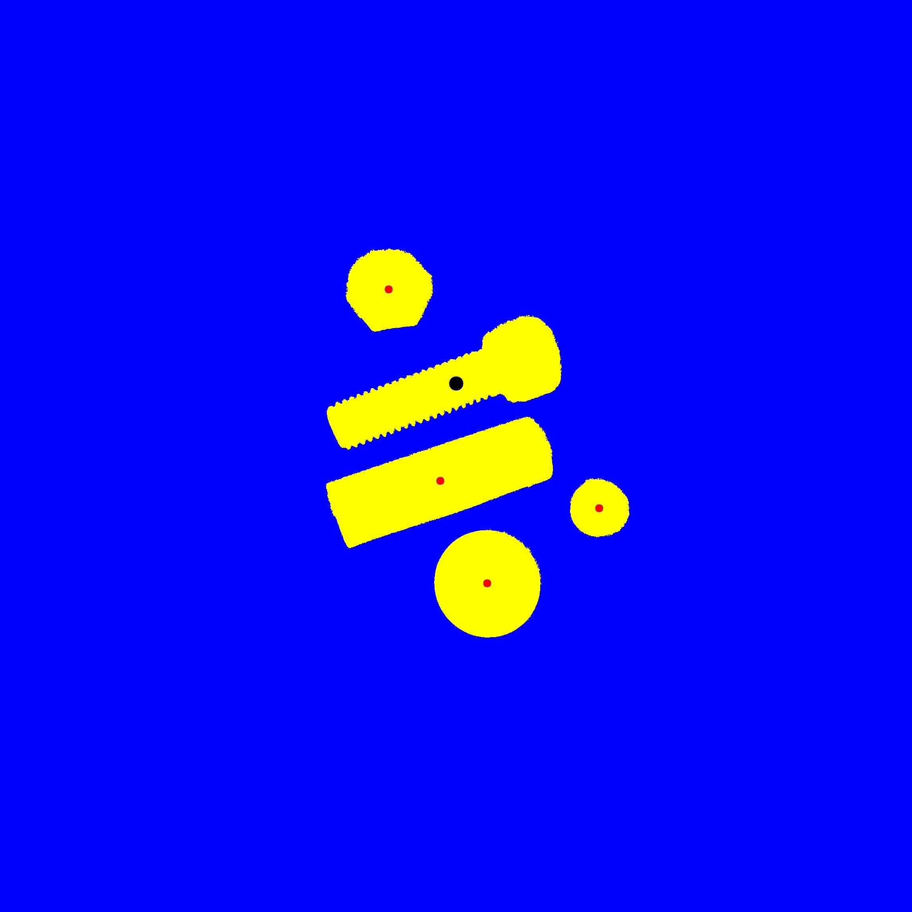
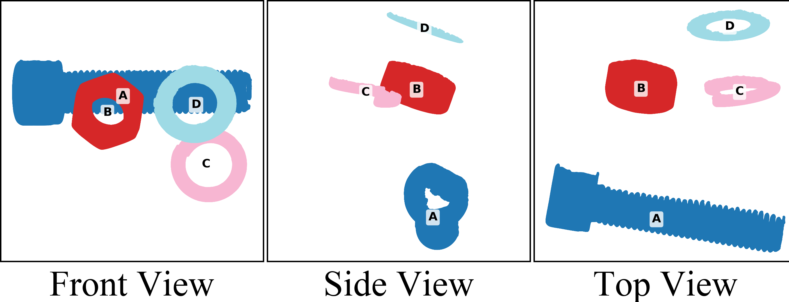
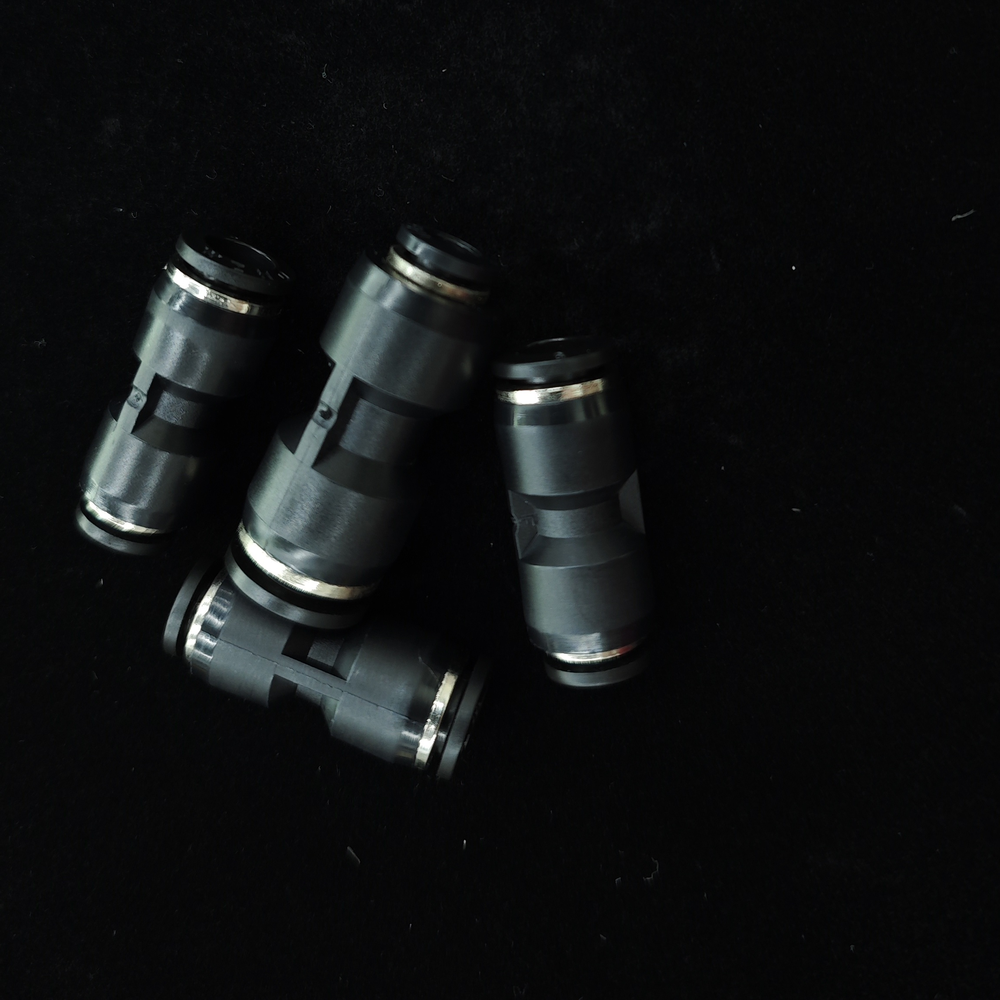
Analyzing where and why MLLMs fail on manufacturing tasks.
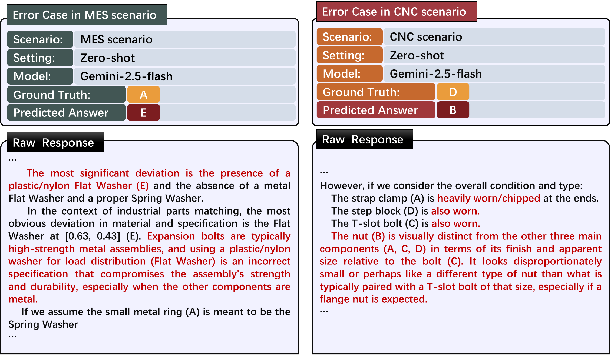
Figure 5. Representative error cases from Gemini-2.5-Flash. Left: the model incorrectly identifies a flat washer material mismatch (predicting E instead of A). Right: the model provides extensive reasoning about worn parts but selects the wrong component (predicting B instead of D).
Insights from evaluating 18 state-of-the-art MLLMs on manufacturing quality inspection.
Frontier models achieve 86–98% accuracy on spatial grounding ablations, confirming they can locate and match parts across images. The limitation lies elsewhere.
MLLMs lack fine-grained manufacturing knowledge (model numbers, specifications). Model-number tasks are 2–3x harder than coarse workpiece identification.
In-context learning with labeled examples improves performance across nearly all models, with gains of 10–20% on average. Best result: GPT-5 reaches 85.2% on Task 1 with ICL.
Counter-intuitively, normal reference images sometimes degrade performance on three-view tasks, suggesting models struggle with multi-image comparative reasoning.
A 3B-parameter model fine-tuned on domain data matches a 235B model, demonstrating that domain-specific training dramatically closes the gap.
Surface defect classification peaks at only 47.1% accuracy (Gemini-3-Flash with ICL), suggesting fine-grained defect discrimination remains an open challenge.
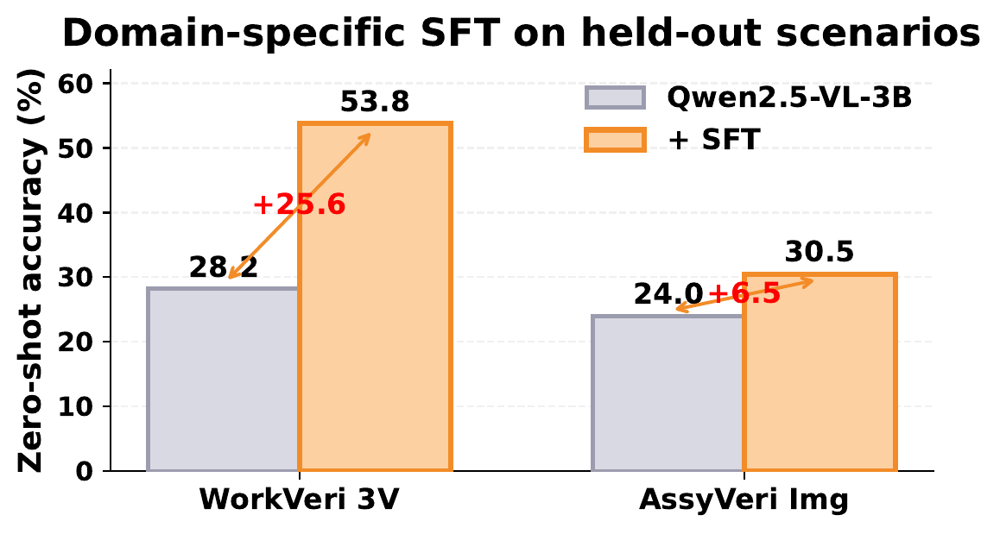
Figure 6. Domain-specific supervised fine-tuning on a 3B model achieves +25.6% absolute improvement on held-out manufacturing scenarios, matching the 235B model's performance.
If you find FORGE useful, please cite our paper: